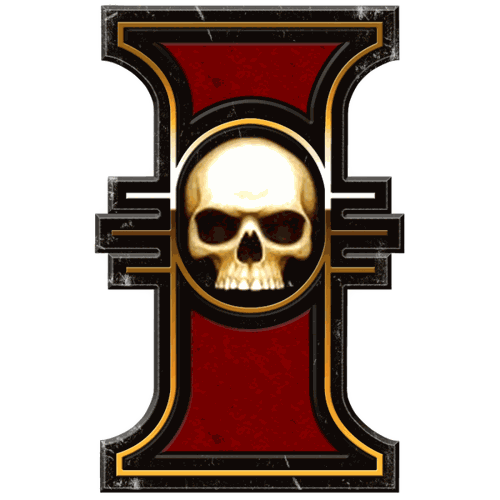

Ordo Malleus
| Ordo Malleus | |
|---|---|
| Ordo Majoris of the Inquisition | |
 The Inquisitorial I, the symbol of the Holy Ordos Artwork © Games Workshop | |
| Organisation | |
| Known as | "Daemonhunters" |
| Chamber Militant | Grey Knights, of Titan in the Sol System |
| Remit | Daemons, Chaos and the mortal agents of the Ruinous Powers |
| Authority | The Malleus Remit, under the Emperor's warrant |
| Governing body | The council of 169 "masters", the Inquisitor Lords |
| Basic unit | The Chamber Practical, led by a proctor |
| Origins | c. 013.M31, in the Horus Heresy (Imperial tradition) |
| Formally constituted | Mid-32nd millennium, after the War of the Beast (estimated c. 544–560.M32)[a] |
| Badge | The Aquila holding a rod and an axe in its talons |
| Sibling Ordos | |
| Ordo Xenos, Ordo Hereticus | |
The Ordo Malleus, whose Inquisitors are often called the Daemonhunters, is one of the three Ordos Majoris of the Inquisition. Its task is to defend the Imperium of Mankind against the daemonic menace of Chaos, and it is the oldest and most secretive of the Holy Ordos. Together with the Ordo Hereticus and the Ordo Xenos, it forms the greater part of the Emperor's secret police and galaxy-wide intelligence service.[1]
The Ordo's Chamber Militant is the Grey Knights, the psychically gifted Space Marine Chapter whose fortress-monastery lies on Titan, the largest moon of Saturn. Only the Grey Knights are held able to meet a daemonic invasion of a whole world. Beside them the Ordo fields a small number of Inquisitors, their retinues of Acolytes and Throne Agents, and Inquisitorial storm troopers, and it may call on any servant of the Imperium for help.[1][2]
Imperial tradition traces the Ordo to the Horus Heresy, when the Emperor commissioned Malcador the Sigillite to find loyal servants who could investigate threats from within and without. The Ordo as a formal body is younger, dating from the mid-32nd millennium. Its masters are bound by a written remit, the Malleus Remit, that places every Imperial authority at the disposal of a Daemonhunter in an emergency, up to and including the High Lords of Terra.[1][3]
Its method is secrecy. The Ordo has long held that knowledge of the daemon is a danger in itself, and it has silenced witnesses, wiped memories and ordered the destruction of whole worlds to keep that knowledge from spreading. Since the opening of the Great Rift in 999.M41, the daemonic incursions of the Era Indomitus have made such secrecy impossible to maintain, and the Ordo has relaxed its policy, at least towards the Adeptus Astartes.[1]
History
[edit]Origins in the Horus Heresy
[edit]The Ordo Malleus is held to be the original heart of the Inquisition. Imperial tradition places its beginnings in the days after Horus raised his rebellion against the Emperor. When the frigate ''Eisenstein'', under Nathaniel Garro, brought word of the betrayal to Terra in 005.M31, the Emperor asked His regent, Malcador the Sigillite, to find men and women of absolute loyalty who would investigate threats to the Imperium, from within and without.[4]
In the days before the Siege of Terra began in c. 013.M31, Malcador brought twelve people to the Emperor's notice. Four were Imperial lords and administrators of an inquiring cast of mind. Eight were psychically gifted Astartes, drawn from both the loyal and the traitor Space Marine Legions, who had remained faithful and served as Malcador's Knights Errant, his personal agents in the war. The eight Space Marines became the first Grand Masters of the Grey Knights, and the four mortals founded what became the Inquisition proper.[4][2]

The Imperial accounts of the founding differ in detail. The Grey Knights themselves hold that they were raised on the Emperor's own command in the final days of the Heresy, and the Ordo's records preserve the memory of a mandate to fight the daemonic enemy that the Heresy had revealed. Only the Emperor and the libraries of the Ordo are said to hold a truthful account of the war.[1][4]
The mid-32nd millennium
[edit]The division that became the Ordo Malleus was not formally constituted until the mid-32nd millennium, centuries after the end of the Heresy, in the wake of the War of the Beast (544.M32). It was one of the first two Ordos Majoris. The other was the Ordo Xenos, created after the war against the Orks to ensure that the Imperium would never again come so near to destruction by an alien enemy.[3]
Where the Alien Hunters turned to the many threats that xenos species presented to Mankind, the Inquisitors who became the Ordo Malleus kept to the Inquisition's first mission, the struggle against Chaos and the daemons of the Warp. For some ten thousand years since, in the Imperial reckoning, the Ordo has waged a covert war against the Ruinous Powers on tens of thousands of human worlds.[1]
The Era Indomitus
[edit]In 999.M41 the 13th Black Crusade and the birth of the Cicatrix Maledictum split the galaxy in two and let daemons loose across the Imperium. Before the Rift, nearly every Astartes had fought daemons by the end of the 41st millennium, yet the Inquisition was known to mind-wipe whole Chapters after certain incidents. Some Chapters, such as the Space Wolves, refused any such intrusion and kept their own lore of the daemon. In the Era Indomitus, with incursions so common and Space Marine responses so necessary, suppressing the existence of daemons among the Astartes has become pointless, and the Ordo has dropped the practice.[1]
Inquisitor Katarinya Greyfax was among those who turned to the old records after 999.M41. She sought the artefact called the ''Eye of Night'', which had once helped Abaddon the Despoiler master the Blackstone Fortresses in the Gothic War, in the hope that it might help Roboute Guilliman learn how to close the Rift. Inquisitor Phaedus Falconet Horst of the Ordo, who had served in the Gothic War and in the Wars for Armageddon, aided her.[5][6]
Organisation
[edit]Hierarchy
[edit]Unlike the other Ordos, the Ordo Malleus has a rigid and formal order of rank. It is led by a council of 169 Inquisitor Lords, the "masters", each of whom has the right to an audience with the Emperor in the inner sanctum of the Imperial Palace if he or she requests it. Their authority extends over the Inquisitorial Representative to the Senatorum Imperialis, and Imperial records state that some representatives have been tried and executed by the masters in the past.[3]
Below the masters are the proctors and proctors minor, each of whom leads a Chamber Practical, the basic unit of the Ordo. Each Chamber Practical is named after its founding proctor and may hold from a few score to several hundred Inquisitors, who work within the sector conclaves of the Inquisition alongside agents of the other Ordos. Inquisitors Ordinary form the rank and file of the Chambers Practical.[1]
A parallel body, the Chambers Theoretical and Historical, is made up of Inquisitors Historical. These are older Inquisitors who can no longer serve in the field through age, illness or injury, and who are set to research and the gathering of data in the Inquisitorial and Administratum libraries. Across the galaxy there are only a few hundred Inquisitors Ordinary and Historical in all, and the Chambers Theoretical and Historical number only a few score.[1]
The Malleus Remit
[edit]The Ordo works under the Emperor's own warrant and so has a free hand in its operations. A Malleus Inquisitor may demand anything he or she sees fit from any Imperial adeptus or armed service without explanation, and any servant who meets the Inquisitor must obey. This extension of authority beyond the Inquisition itself is known as the Malleus Remit. In an emergency that threatens an imminent daemonic outbreak, even the High Lords of Terra and the Adeptus Astartes must obey it without question, a duty laid down at the end of the Heresy by the Emperor's own decree.[1]
The most common demand is for troops, and such forces rarely survive their service. The Inquisitor would otherwise have to mind-wipe or kill soldiers exposed to the realities of Chaos, and so their loss is not always counted as a failure. Units that die in the service of the Ordo receive high public honours, though the campaigns in which they earned them remain sealed.[1]
Dress and insignia
[edit]Malleus Inquisitors favour plain and sinister dress: loose black habits over armour and deep hoods that hide the face. Many carry electoos, tattoos that glow beneath the skin, one for each coven of witches or heretics that the Inquisitor has uncovered and cleansed. The designs recall in stylised form the daemons and other foes the Inquisitor has faced. The seldom-used badge of the Ordo is the Aquila holding a rod and an axe in each talon, worn on the shoulder or on the right breast. Masters and proctors are always psykers and carry force rods as a mark of their authority.[1]
Role
[edit]The daemon without and the daemon within
[edit]The Ordo's investigations fall under two heads. The "daemon without" is the daemon that has physically manifested in the material universe, and the mortals dedicated to Chaos in all its forms. The "daemon within" is the corruption of the Imperium's own servants, including Radical Inquisitors who adopt the tactics and artefacts of Chaos to fight it and are declared ''Extremis Diabolus'' for it. The second duty overlaps with the work of the Ordo Hereticus and can lead to jurisdictional quarrels between the two Ordos.[1]
Since a daemon can remain in the material universe only so long as the energies of the Warp sustain it, the Ordo's work is largely preventive. Much of it consists not of banishing daemons but of stopping their arrival: breaking Chaos cults before they complete a summoning, finding rogue psykers before possession takes them, and keeping watch over scholars and collectors who might unwittingly open a Warp rift. Some daemons are so powerful that the only way to save a world is to prevent them from manifesting.[7]

When a daemon has already crossed into realspace, the Ordo's duty is to banish it, which often means inflicting enough damage to its physical form to break its hold. Even veteran Daemonhunters find these encounters momentous, since a daemon's presence can taint a soul and break a mind. Inquisitors therefore cannot rely on local forces, few of which have the will to face such an enemy, and their Acolytes must be strong in spirit as well as in arms.[7]
Secrecy and the mind-wipe
[edit]The Imperium long did its best to hide the existence of the Chaos Gods, daemons and Chaos Space Marines from its people, and the policy is older than the Golden Throne. It was set when only the Emperor and His primarchs knew that the Warp held intelligent entities capable of possessing the living. Even the primarchs were not told the full truth, for fear that the knowledge itself would corrupt them.[1]
The Inquisition's rule is that anyone exposed to the daemon either dies, or, if a valuable servant, is mind-wiped. Survivors of daemonic incursions have been quarantined for life in labour camps, and in extreme cases the world itself has been given over to Exterminatus. As a result, most of what is known of daemonic incursions has been removed from public records and survives only in proscribed texts and in xenos scripts the Inquisition has yet to destroy.[1]
Forces
[edit]Retinues and storm troopers
[edit]The Ordo's own forces are small, since few people are trusted with extensive knowledge of Chaos. A Daemonhunter strike force usually consists of an Inquisitor, the Inquisitor's retinue of Acolytes and Throne Agents, and as many Grey Knights as can be spared. Its great advantage is its arms: consecrated weapons and armour made with techniques lost to the rest of the Imperium, produced and kept by Malleus savants and by tech-priests of the Adeptus Mechanicus, and specially designed against daemons, Chaos Space Marines, sorcerers and rogue psykers.[1]
Many Inquisitors keep Inquisitorial Storm Troopers, soldiers trained from youth by the Schola Progenium and armed with hellguns and hellpistols. They are chosen from families with a record of faith and prior service to the Inquisition, and they guard Inquisitorial fortresses and the Black Ships as well as serving in retinues. Only the Grey Knights are expected to survive service with the Ordo; other seconded troops are usually spent or silenced.[1]
The Grey Knights
[edit]
The Grey Knights are the Chamber Militant of the Ordo Malleus. Every Grey Knight is a potent psyker, and in the ten thousand years of Imperial history no Grey Knight has been corrupted by Chaos, a record attributed to the purity of their gene-seed and the rigour of their conditioning and faith. Their existence is a close secret outside the Inquisition and the highest ranks of the Imperial adepta. Astartes of other Chapters who serve with the Ordo are mind-scrubbed at the end of their service, but the Grey Knights alone are allowed to keep their memories.[2][1]
Notable members
[edit]Torquemada Coteaz is the High Protector of the Formosa Sector, served by thousands of Acolytes and Throne Agents, and is armed with an anointed daemonhammer and a collection of relics. Hector Rex, Lord Proctor of the Scarus Conclave in the Scarus Sector at the time of the Siege of Vraks, bears the title ''Auditorii Imperator'' as one of the few people admitted to the Emperor's presence in the ''Sanctum Imperialis''. Jaq Draco, active in the late 38th and early 39th millennia, exposed the Ordo Hydra and its plot to enslave Mankind psychically, entered the Sanctum Imperialis and was afterwards declared Renegade; he is reported to have died in the Webway in the early 39th millennium.[1][7]
Others are remembered for their failures and falls. Lord Inquisitor Hiram Ntshona, the last of the Chamber Appoloyon of the lost Orpheus Sector, mistook the awakening of the Maynarkh Dynasty of the Necrons for a daemonic incursion and withheld what he knew from the Ordo Xenos, contributing to the Orphean War and the sector's fall. The Renegade Quixos, a former Daemonhunter, was slain by Gregor Eisenhorn on Farness Beta after centuries of study of Chaos in the hope of closing the Eye of Terror. Inquisitrice Brei Ligeia learned the true name of the Greater Daemon Ghargatuloth, enabling the Grey Knights Justicar Alaric to banish it for a thousand years, though she was condemned for it.[8][3][9]
Timeline
[edit]| Date | Event |
|---|---|
| 005.M31 | The ''Eisenstein'' reaches Terra with news of Horus' treachery |
| c. 013.M31 | Malcador presents twelve loyal agents, the founders of the Inquisition and the first Grey Knights Grand Masters (Imperial tradition) |
| 544.M32 | The War of the Beast; the Ordo Malleus and Ordo Xenos are formally constituted in its wake (estimated) |
| 139–160.M41 | The Gothic War; Abaddon uses the ''Eye of Night'' to master the Blackstone Fortresses |
| 447.M41 | Two Grey Knights brotherhoods under Captain Pelega join Inquisitor Appoloyon against the Godjera Incursion |
| 813–831.M41 | The Siege of Vraks; Lord Inquisitor Hector Rex is Lord Proctor of the Scarus Conclave |
| 999.M41 | The Great Rift opens; the Ordo's policy of silence towards the Astartes lapses |
| after 999.M41 | Greyfax and Horst hunt the ''Eye of Night'' on Guilliman's behalf |
See also
[edit]Notes
[edit]- ^ The date is estimated from the sequence of events: the Ordos Majoris are said to have been formed in the wake of the War of the Beast, dated 544.M32.
References
[edit]- ^ a b c d e f g h i j k l m n o p q r s Codex: Inquisition (6th edition). Games Workshop. pp. 12-14, 18, 30, 37, 47, 55.
- ^ a b c Counter, Ben. Grey Knights (novel). Black Library. Index Astartes II, "Purge the Unclean: The Grey Knights and Deathwatch Chapters". Games Workshop.
- ^ a b c d Abnett, Dan. Malleus (novel). Black Library. chs. 21-23. McNeill, Graham. The Chapter's Due (novel). Black Library.
- ^ a b c Counter, Ben. Dark Adeptus (novel). Black Library. Counter, Ben. Grey Knights (novel). Black Library.
- ^ Thorpe, Gav. Eye of Night (audio drama). Black Library.
- ^ Haley, Guy. Avenging Son (novel). Black Library.
- ^ a b c Dark Heresy: Daemon Hunters (roleplaying game). Fantasy Flight Games. pp. 28, 32. Dark Heresy: Ascension (roleplaying game). Fantasy Flight Games. pp. 173-174.
- ^ Imperial Armour Volume Twelve: The Fall of Orpheus. Forge World. p. 28.
- ^ Counter, Ben. The Hammer of Daemons (novel). Black Library.